Fridge Politics
Midnight on shelf two: the fridge is holding an election. The cola promises more sugar, the juice says it's basically breakfast, and the quiet silver candidate is Red Bull Sugarfree. Then a real voter opens the door.
Instant, wordless premise (the fridge is alive) that stops the scroll in one frame, and a built-in way to dramatise the product's difference: rivals become characters whose flaw is their product category (the sugary soda literally campaigns on sugar), so the comparison is a joke instead of an attack. It works for any physical product because every product lives among other objects.
Contact sheet
One keyframe per shot, with the caption as it will appear.
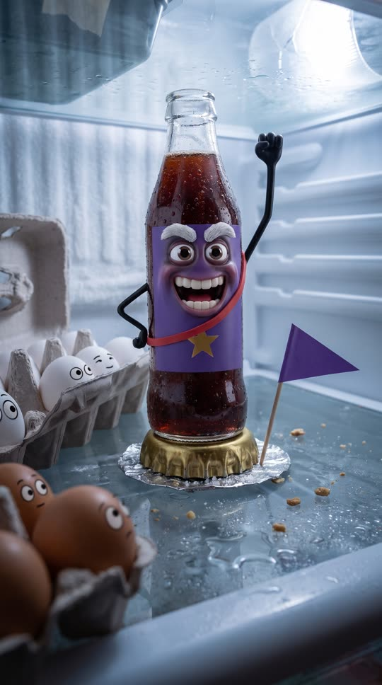
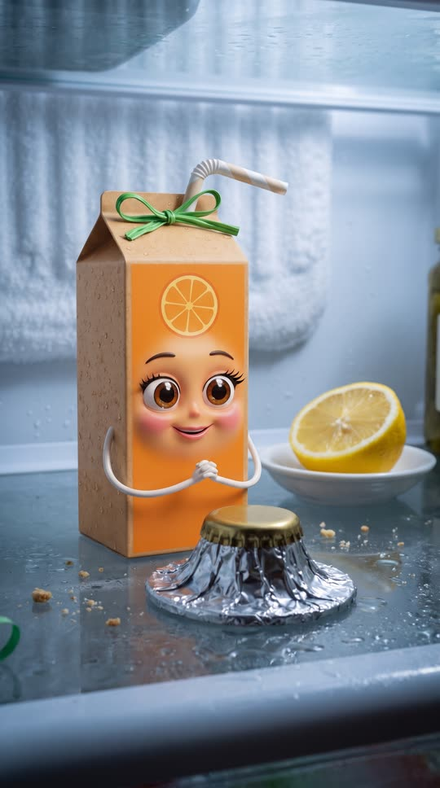
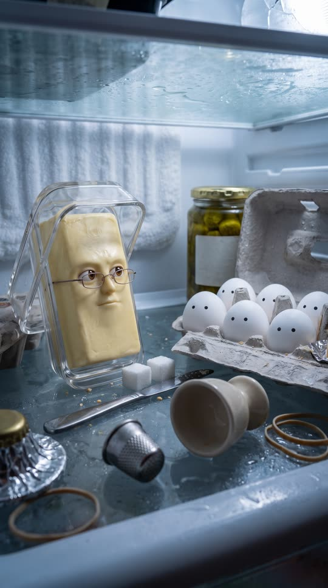


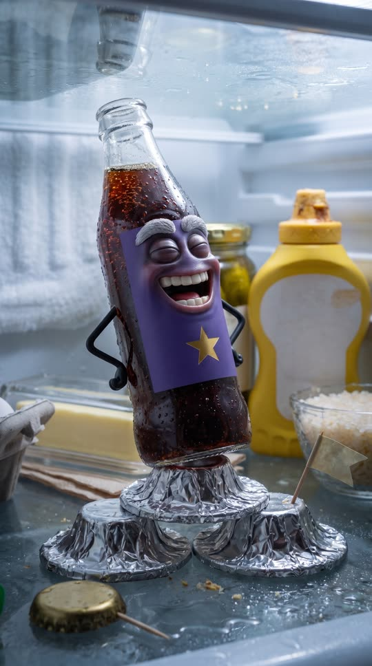
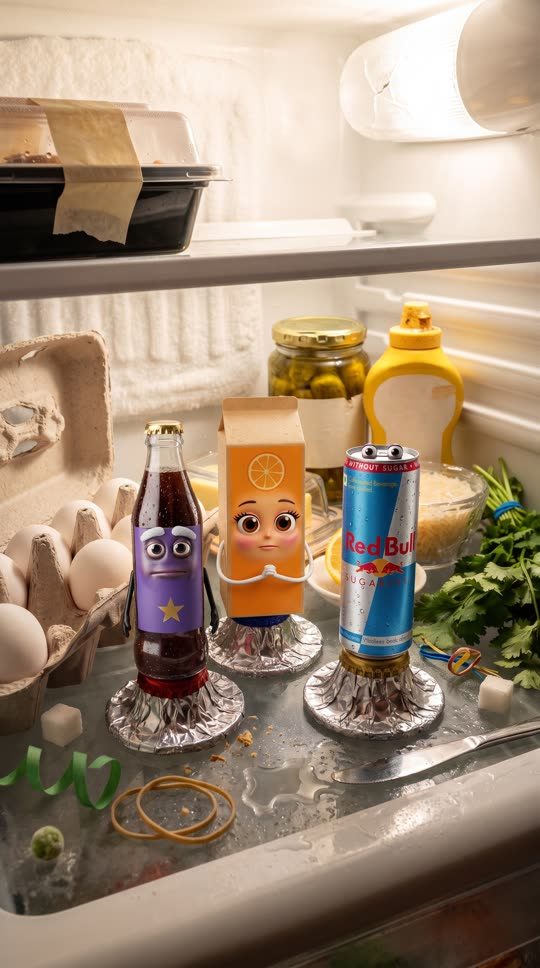

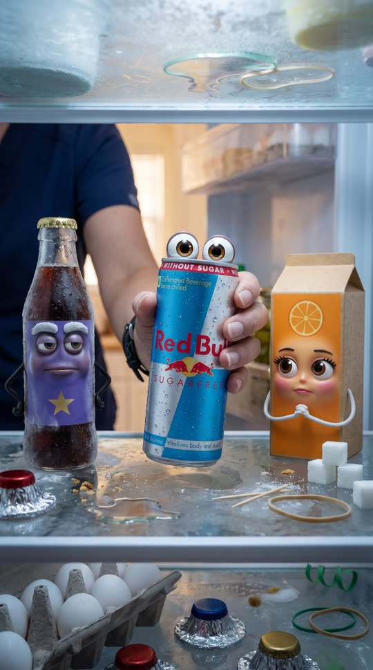
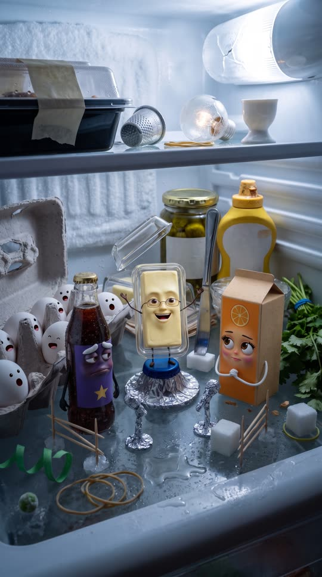
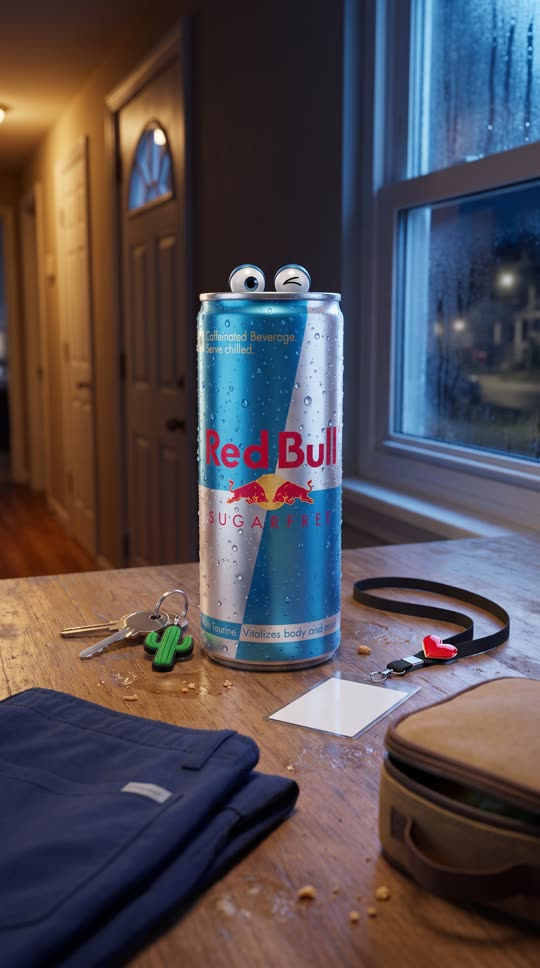
Cast and world
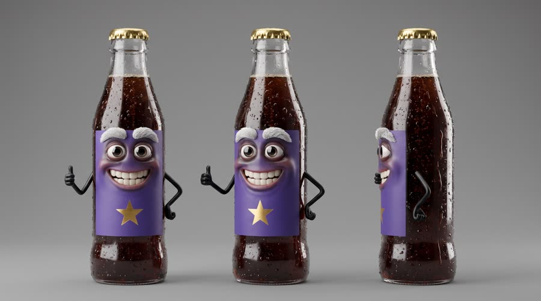
Voice: man, 60s, booming Boston Irish American politician, backslapping
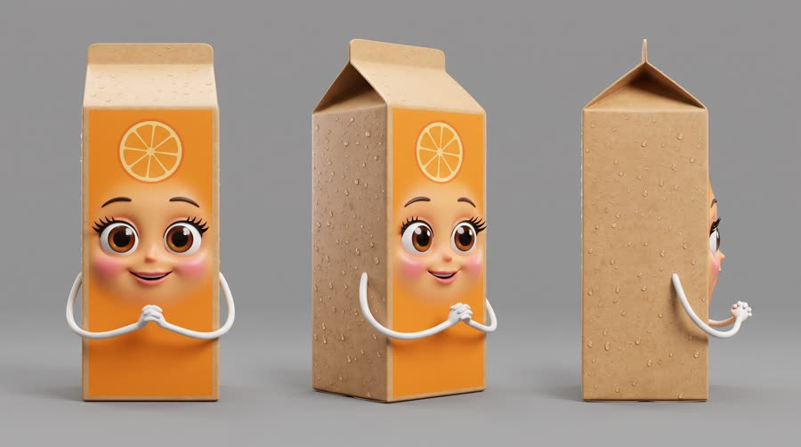
Voice: woman, 50s, sugary-sweet Midwestern PTA-president voice
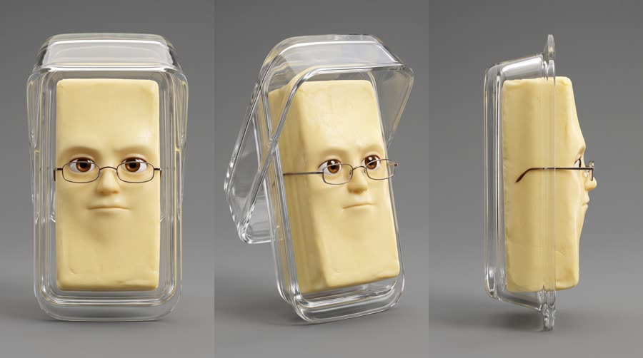
Voice: man, 30s, Korean American, smooth evening-news anchor, deadpan
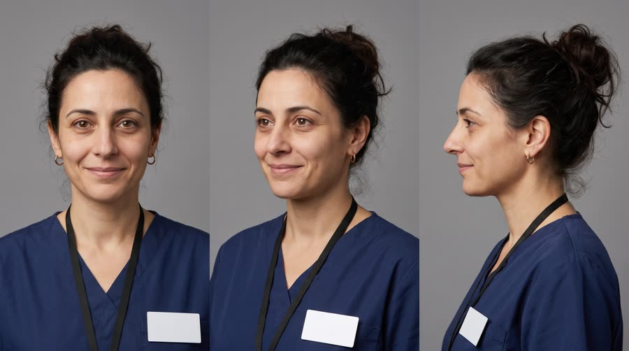
Voice: woman, 40s, low, tired, dry humour, American
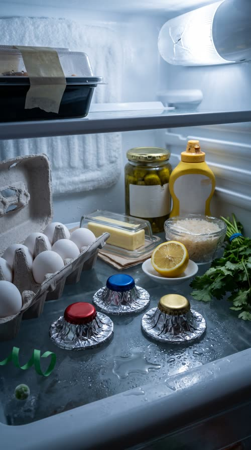
World. Inside an ordinary North American family fridge at midnight, shelf two, set up as a tiny election debate: bottle-cap podiums, a butter dish moderator, an egg carton audience, a jar of pickles and a mustard bottle in the back row. The fridge door is the edge of the world; a night-shift nurse is the only voter who counts. Palette. Neutral fridge white and cool bulb blue; each candidate owns one loud colour (cola purple and gold, juice orange, butter yellow); the product owns sky blue and silver, the only cool colour among the candidates.
Fictional brands. Fizzwell Cola (clear straight-sided glass bottle of dark fizzy cola, plain purple label with one gold star, no letters; deliberately NOT a contour bottle or a red label, which would read as a real market leader); Brightbloom Orange Juice (carton, plain orange panel with a simple orange-slice drawing, no letters)
World bible
Fixed with the concept: the lore, the objects and the textures that make this world specific. Only product-adjacent props change per product.
- The fridge belongs to Marisol Vega in a small house in San Antonio; it was bought second-hand in 2014 and its door seal is tired, so frost builds on the back wall.
- Shelf two has held an election every night since the fridge arrived. Whoever the voter picks goes with her; everyone else waits another night.
- Buck Fizzwell has won nine elections in a row, mostly at weekend barbecues, and has never once been picked for a work night.
- The egg-carton audience is eleven eggs; the twelfth went into this morning's omelette, and its empty cup sits in the front row.
- Marisol starts a twelve-hour night shift at 12:30am at the fictional St. Aldric Hospital. Whoever she picks tonight rides in her bag until dawn.
Materials. Everything is a real grocery or kitchen object shot as photoreal macro product photography; the only stylization is the faces (glossy animated eyes and mouths that sit on the object's surface and catch the same fridge light) and the rivals' thin noodle arms. Debate furniture is improvised from real fridge and kitchen odds and ends: metal bottle caps, crinkled foil, toothpicks, rubber bands, twist ties, sugar cubes, a butter knife. Faces exist only on the named characters and the egg audience in the shots where they act: location plates and prop sheets show plain objects with no eyes. Every surface carries real condensation, frost, smears and crumbs.
Wear and time. A Tuesday, 12:04am. The door was last opened at 6pm. Frost has built up on the back wall because the seal is tired, the bulb flickers now and then, one egg is gone, a drip of old juice has dried on the back wall, and the shelf is wet from the rice put away warm.
Signature objects
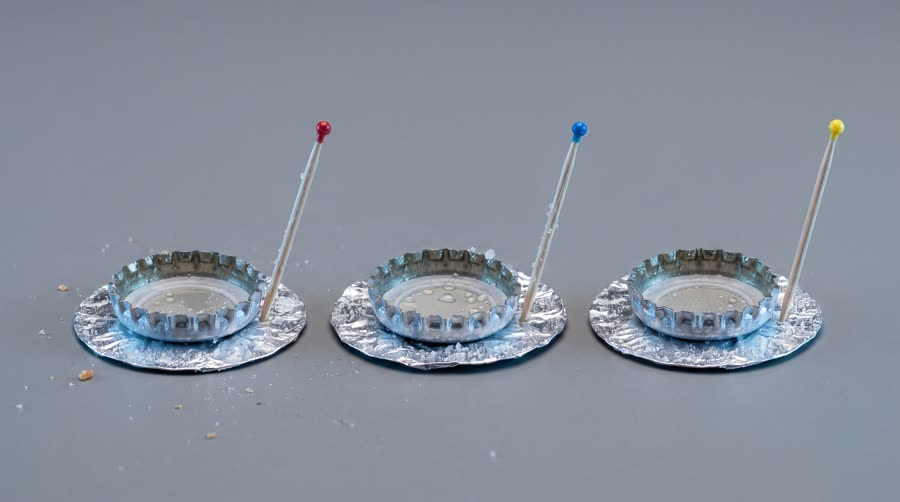
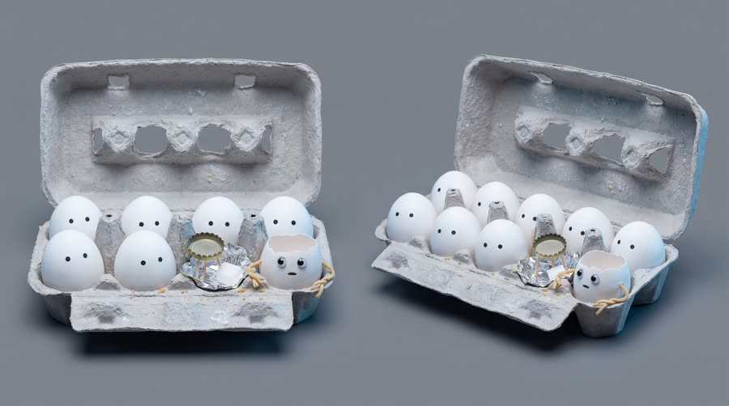
Set dressing by location
Foreground
beads of condensation and a small puddle along the front edge of the glass shelf; a green paper twist tie curled on the glass; each upturned metal bottle-cap podium standing on a round of crinkled foil like a tiny stage mat; a single stray frozen pea near the shelf edge
Midground
the open grey paper-pulp egg carton of white eggs with one empty cup in the front row; the clear glass butter dish on a folded paper napkin; half a lemon cut side down on a small white saucer; a glass ramekin of leftover rice under wrinkled cling film; a bunch of cilantro held with a blue rubber band
Background
a pickle jar with a blank label and a dent in its gold lid; a mustard squeeze bottle with a crusted yellow cap and a blank label; frost furring the ridged white back wall; a plastic takeout container on the upper shelf with a blank strip of masking tape; a dried amber drip of old juice on the back wall; the fridge bulb cover with a hairline crack, glowing cold white-blue
- Buck: a gold metal crown cap with one crimp bent from a bad fall off the door shelf; a toothpick flag with a tiny plain purple paper triangle he waves; a red rubber band worn across his label like a campaign sash; bubbles inside him that rise faster whenever he exaggerates
- Brenda: a green twist-tie bow on her gable top; a bendy paper straw tucked behind her spout like a pen behind an ear; a faint crease on her side from being squashed behind the milk
- Moderator: a glass lid he wears tipped back like a hat, with one fingerprint smudge on it; small rectangular reading glasses; a butter knife laid across two sugar cubes as his desk; an upturned thimble he taps like a bell for order
- Marisol: navy scrubs with a plain pen with a sky-blue cap clipped in the chest pocket; a plain lanyard with a blank white badge and a tiny red enamel heart pin; a plain black wristwatch with a cracked strap; a claw hair clip holding her messy bun; house keys with a small rubber cactus keychain
- Fizzwell Cola: a single gold star, purple and gold. On: Buck's plain purple label, his toothpick flag. Text in post: the speaker tag Cola only
- Brightbloom Orange Juice: a simple orange-slice drawing, orange and white. On: Brenda's front panel. Text in post: the speaker tag Juice only
the fridge compressor's low hum under everything; the faint buzz of the fridge bulb; bubbles fizzing up inside the cola; a glass lid clinking as Pat tips it; a thimble tapped like a bell; tiny squeaky cheers from the egg carton; the door seal's suction pop and a wash of kitchen sound; the can sliding with a squeak on wet glass and a hiss of cold mist
Beats
| Time | Beat | What happens |
|---|---|---|
| 0-3 | hook | The fridge light clicks on and a cola bottle with a politician's grin is mid-stump speech on a bottle-cap podium. |
| 3-9 | setup | The juice carton makes her pitch; the butter-dish moderator calls on the third candidate; the silver can slides into place. |
| 9-15 | product | The can's calm pitch, label to camera: the brand line and the benefit. The cola scoffs. |
| 15-22 | build | The door swings open: everyone freezes. A tired nurse looks in, says why she needs it, and her hand reaches past the cola and juice for the can. |
| 22-26 | payoff | Door shut: the eggs erupt, the moderator calls it, the cola asks for a recount. |
| 26-30 | cta | The can on the counter by her keys, heading to the night shift, gives a wink. Tagline. |
Screenplay
44 spoken words in 30 s. Each line keeps its intent (fixed in the template) and its wording (written for this product).
| Time | Speaker | Line | Intent (template) |
|---|---|---|---|
| 0.3-2.7 | Buck | My fellow leftovers! More sugar for everyone! booming stump-speech, fist pump, crowd-baiting | Hook: the loudest rival pitches the exact thing the product is proud not to have. |
| 2.9-4.8 | Brenda | Vote for me. I'm basically breakfast. sugary-sweet, a little smug, fluttering lashes | The second rival's pitch: the wholesome-sounding alternative, played for a laugh. |
| 5.2-6.6 | Moderator | And the silver can? deadpan news anchor, peering over his glasses | The moderator hands the floor to the product. |
| 9.4-12.4 | can | Red Bull Sugarfree. Same benefits. No sugar. cool, dry, unbothered, woman in her 30s, the pull tab flapping as she talks · Say: RED BULL SHUG-er-free, three clear words | Product line: name the product and its one benefit, calm and confident, from an allowed claim only. |
| 13.0-14.8 | Buck | Ha! Nobody picks the quiet one. scoffing belly laugh | The rival dismisses the product; sets up the reversal. |
| 16.8-18.8 | Marisol | Long shift. I need to focus. tired, to herself, rubbing her eye | The real user states the need in her own words (the use moment). |
| 22.8-24.4 | Moderator | The people have spoken! losing his anchor cool, delighted | Payoff: the world declares the product the winner. |
| 25.0-25.7 | Buck | Recount? small, deflated, to the juice | Button: the rival's sore-loser joke. |
| 27.4-29.4 | can (off camera) | Wiiings without sugar. cool, a smile in the voice, after a wink · Say: WINGS, stretch the vowel slightly | Tagline in the brand's own words. |
Generation plan
U1 · 0 to 9.0 s · 9 s generation
Shots S01, S02, S03, S04 · References: fizz card, juice card, pat card, fridge plate, product can official, S01 keyframe as first frame
9:16 photoreal macro inside a fridge at midnight, everyday objects with expressive 3D animated faces, cold white-blue fridge light, condensation. Shot 1 (0 to 2.8 s): the fridge light clicks on; @Image1 (Buck Fizzwell, a cola bottle with a politician's face) on a bottle-cap podium, fist-pumping with a noodle arm, booming: "My fellow leftovers! More sugar for everyone!" Shot 2 (2.8 to 5 s): @Image2 (Brenda, an orange juice carton with lashes) at the next podium, sweetly smug: "Vote for me. I'm basically breakfast." Shot 3 (5 to 7 s): @Image3 (Pat, butter in a glass dish with reading glasses), deadpan, as the eggs turn to look: "And the silver can?" Shot 4 (7 to 9 s): the exact can from @Image5 slides upright into the third spot with a puff of cold mist, label to camera; its only face is two small eyes rising over the top rim on the lid, no face on the label. Native sound: fridge hum, light click, egg murmurs. No music. No text, labels blank except the product.
U2 · 9.0 to 15.0 s · 6 s generation · exact-risk (short, cheap to re-roll)
Shots S05, S06 · References: product can official, fizz card, fridge plate, S05 keyframe as first frame
9:16 photoreal macro inside a fridge. Shot 1 (0 to 3.8 s): slow push-in, camera slightly above the rim, on the exact can from @Image1 standing upright on the glass shelf, label to camera, frosty, undistorted. Its face is only two small glossy eyes on the silver lid peeking over the rim; the pull tab flaps like a mouth as it says, cool and dry (a woman's voice): "Red Bull Sugarfree (said RED BULL SHUG-er-free, three clear words). Same benefits. No sugar." The label never moves, bends or grows a face. Shot 2 (3.8 to 6 s): @Image2 (the cola bottle) tilts back in a scoffing belly laugh: "Ha! Nobody picks the quiet one." Keep the can's shape, colours, wordmark, bulls and gold sun exactly as @Image1. Native sound: fridge hum, one egg gasp, laugh. No music.
U3 · 15.0 to 26.0 s · 11 s generation
Shots S07, S08, S09, S10 · References: marisol card, fizz card, juice card, pat card, fridge plate, product can official, S07 keyframe as first frame
9:16 photoreal. Shot 1 (0 to 1.6 s): the fridge door swings open, warm kitchen light floods the shelf and every object freezes like an ordinary object, faces neutral and still. Shot 2 (1.6 to 4.4 s): low POV from the shelf looking out: @Image1 (Marisol, a tired nurse in navy scrubs) leans in, rubs her eye, to herself: "Long shift. I need to focus." Shot 3 (4.4 to 7.6 s): insert, her hand reaches past the frozen @Image2 (cola bottle) and @Image3 (juice carton) and lifts the exact can from @Image6 off the shelf, label to camera, undistorted; its lid eyes widen with delight. Shot 4 (7.6 to 11 s): door thuds shut, dark, the fridge light clicks back on; the eggs erupt cheering, @Image4 (Pat, butter in a glass dish) flips his lid up like a hat: "The people have spoken!" The cola turns to the juice, deflated: "Recount?" Objects only move while the door is closed. Native sound: door seal pop, kitchen room tone, clink, door thud, cheering. No music. No text.
U4 · 26.0 to 30 s · 5 s generation · exact-risk (short, cheap to re-roll)
Shots S11 · References: product can official, S11 keyframe as first frame
9:16 photoreal pack shot on a kitchen counter by the front door at night. Slow push-in, camera slightly above the rim, on the exact can from @Image1 standing upright beside house keys and a lanyard with a blank badge, label to camera, condensation, undistorted. Its only face is two small glossy eyes on the silver lid peeking over the rim; one eye gives a single slow wink. The can does not move, bend or grow a face on the label. Clean dark space above the can. Native sound: keys jingling off screen, a door opening to night crickets. No music, no text.
Sound, music, voice, captions
| 0 to 9.0 s | campaign | Mock election fanfare: snare roll and pompous brass in B flat, 108 bpm, a little honky and small like a school band, ducking under each line. |
| 9.0 to 15.0 s | the quiet one | The brass drops out; a cool muted vibraphone and upright bass groove under the can's line, then a tuba raspberry on the cola's laugh. |
| 15.0 to 26.0 s | the vote | Hard stop to silence on the door opening (the freeze), a single held high string note while she chooses, then the full fanfare explodes on the door shut and a sad trombone for the recount. |
| 26.0 to 30 s | button | The vibraphone groove returns, resolves on one warm chord under the tagline. |
Added sound
- 0.1 s: fridge light click (the premise starts on the light; the click is the hook's first beat)
- 15.0 s: fridge door seal pop (the freeze gag only works if the viewer registers the door)
- 22.6 s: door thud and egg crowd cheer (the payoff cue)
- Buck: native voice in U1, then his U1 stem as voice reference for U2 and U3
- Brenda: native in U1 only
- Moderator: native in U1, U1 stem as reference for his U3 line
- can: cast a designed voice (woman, 30s, cool and dry) for the U2 line with TTS or native generation, then reuse it as the reference for the U4 tagline so the product sounds like the same character
- Marisol: native in U3
font: Poppins ExtraBold, size: 5.2% of frame height, color: #FFFFFF, active word: #FFFFFF, other words 75%, box: rounded pill box behind each line in the speaker's colour: cola #5B2A86, juice #F28C1B, butter #E9C23A with dark text, can #2A9BD8, human #333333, speaker tag: tiny name tag above the pill for the first line of each speaker (e.g. 'Cola'), 2.6% height, shadow: none (the pill carries it), position: centre, 70% down the frame, above the platform UI safe zone, max words on screen: 4
Post text- 27.2 to 30 s: Red Bull Sugarfree / Wiiings without sugar (Poppins ExtraBold, white on a rounded sky-blue #2A9BD8 pill, centred in the dark space above the can, slides up 12 px and fades in over 8 frames)
- 0.4 to 9.0 s: Speaker name tags (Cola, Juice, Moderator) above each first caption / (tiny Poppins SemiBold tag in the speaker's colour, per caption_look)
Adaptation contract
How this same concept takes any physical product.
| Product type | Where it sits in the story | Scale |
|---|---|---|
| ingested | the product is a candidate in the fridge and the voter takes it for her shift | object among objects |
| applied | the election is held in the bathroom cabinet; the voter reaches for the product before work | object among objects |
| worn | the election is held in the wardrobe or shoe rack; the voter pulls the product on | object among objects |
| handheld | the election is held in the junk drawer or desk; the voter grabs the product on her way out | object among objects |
| carried | the election is held on the coat hooks by the door; the voter picks the product up | object among objects |
| home | the election is held in the living room among the furniture; the voter sinks into or switches on the product | room, the human is still a giant |
| consumable | the election is held in the pantry or cupboard; the voter takes the product for the day | object among objects |
Style bible
Look. Photoreal macro world at the objects' scale: real materials, real condensation, real clutter, shot like product photography. Faces are sculpted and 3D animated (glossy eyes with catchlights, flexible brows, a mouth that moves) and sit where the object's own shape suggests a face. Thin noodle arms only where they do not hide a label. Each character's personality is its category (cola: loud, sweet, old-school; juice: wholesome, a little smug; butter: smooth moderator). The human world is out of focus, huge and bright.
Camera. Macro lens at object height, 35 to 50mm equivalent at that scale. Locked-off two-shots and singles like a TV debate, slow push-ins on the zingers, a fast whip for the freeze. The human is seen from the objects' point of view (from inside the fridge looking out and up).
Light and texture. Motivated by the place: here the cold white-blue fridge bulb from the back and top, soft and slightly underexposed when the door is shut (the characters' night), then a blast of warm kitchen light when the door opens. The product gets a clean cool key and rim so its aluminium and condensation sparkle. Photoreal: frost, condensation beads, glass reflections, the slightly grubby realism of a lived-in fridge (a crumb, a ring stain). Faces are clean, glossy, stylized 3D animation, integrated with correct light and reflections so they feel part of the object.
Pacing. Premise in the first second (a face on an object talking), a joke every 3 to 4 s, rival lines short and punchy, the product's line calmer and held at least 2 s on the label, one freeze beat for the human, then the reaction button and CTA.
Sound. Native sound from the generations: fridge hum, glass clinks, condensation drips, big character voices. A mock election score (snare rolls, a brassy campaign fanfare, a tuba for the loser) stitched across units. Added sound only for the door opening, the fridge light click and the cheer.
Known failures.
- the model paints a face over the can's label or bends the label into a mouth: state the face placement rule in every can prompt ('eyes on the silver lid peeking over the rim, label untouched, no face on the label')
- the rivals get real-looking brand labels or invented text: say 'plain label with only a simple wave or fruit shape, no letters'
- extra copies of the product appear on the shelf: say 'only one can of the product in the fridge'
- objects change size between shots: state relative sizes (the cola bottle is taller than the can, the juice carton is the tallest)
- the human's face or hand is distorted at the fridge scale: keep her at the frame edge, out of focus behind the objects, or a clean hand-only insert
- faces float off the object or look pasted on: say 'the face is part of the object, lit by the same fridge light, with matching reflections'
- when the door opens the characters keep emoting: in the freeze shot say 'faces neutral and still, eyes open and fixed, like ordinary objects'
- eggs multiply faces into a crowd of garbled mush: give eggs simple dot eyes and open mouths only
- a generic cola drawn as a contour bottle with a red label and white wave reads as a real market leader's trade dress, and the model then adds that brand's script to background bottles: give rivals an off-category colour and silhouette (here a stubby straight bottle with a purple label) and list the only allowed background objects; but a brown or amber bottle reads as beer, which must never appear in a caffeine ad: rival drinks stay in clear glass that shows what they hold
- a human shot 'from inside the fridge' sprouted an extra silver can with a human face on the shelf: in human shots say 'no cans, no bottles and no faces in this shot'
- a high camera on the product makes the slim can look squat and fat: keep product close-ups only 10 to 15 degrees above the rim and say 'full slim height'
- depth pass: the kitchen odds and ends (sugar cubes, thimble, twist ties) can multiply into clutter that competes with the faces: keep them small at the frame edges and the faces on a clean patch of shelf
- blank masking tape and labels in the background can grow scribbled letters: say blank, no writing
- prop reference sheets come back with printed caption labels (front view, prop details, a title): say no captions, no labels, no annotation text anywhere on the sheet
- the style's face rule leaks into the empty location plate and prop sheets (bottle caps and eggs grew eyes and noodle legs): say plain inanimate objects, no eyes, no faces, no arms, and keep faces only in the acting shots
- in the freeze beat the rivals kept smiling and the warm door light came back cool: say mouths closed in a flat neutral line and describe the warm door light as golden-orange and clearly warmer than the fridge light
Claims and cost
Claims used (all from the product page): Same benefits of the original Energy Drink, without sugar; Caffeine helps to improve concentration (voiced as the user's need, not as a promise)
Video estimate: 31 s of generation at $0.27/s = $8.37 first pass, $20 to 30 with retakes, plus about $1.5 music.